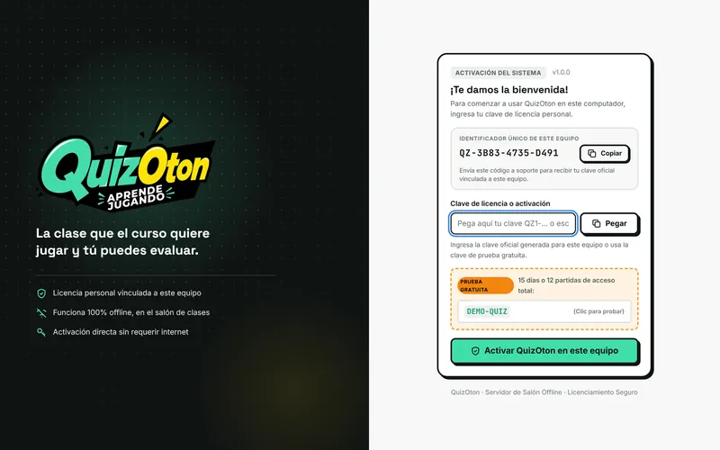
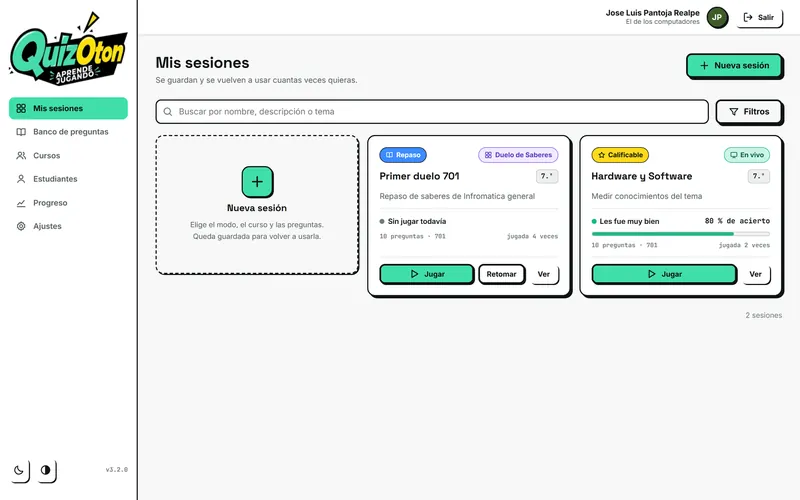
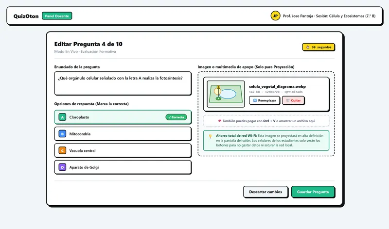
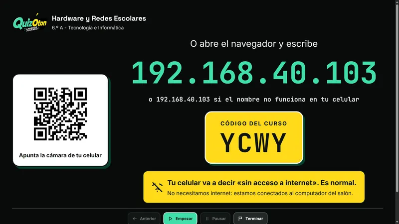
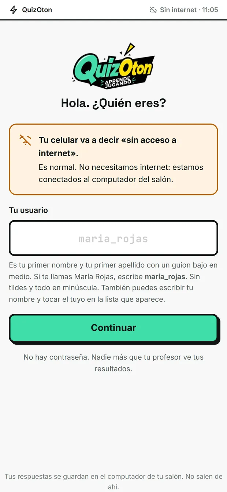
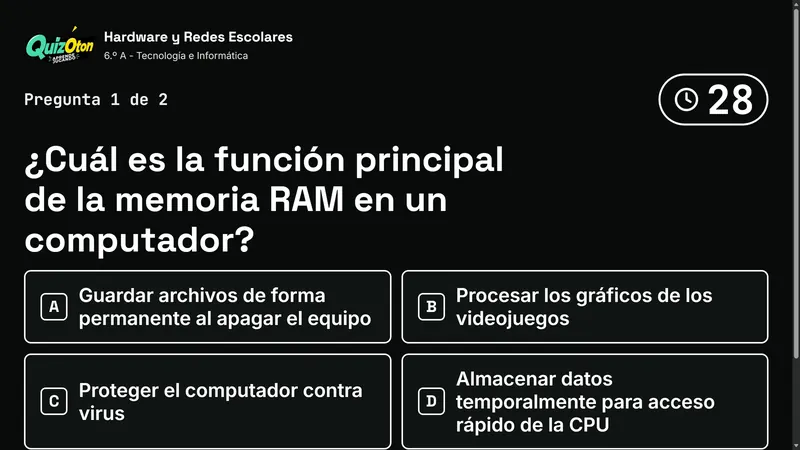

Todo lo que necesitas para preparar y dar tu primera clase, sin tecnicismos. Léela en orden la primera vez y vuelve a ella cuando la necesites.
Versión 1.0
Windows 10 y 11
Lectura de 15 minutos
Antes de empezar
QuizOton convierte tu computador en el centro de la clase. Tus estudiantes se conectan con el celular a través del Wi-Fi del salón y responden desde el navegador. Nada pasa por internet.
Cómo se conecta todo
Lo que necesitas
Un computador con Windows 10 u 11. Es el que usas para dar clase.
Un router Wi-Fi. Cualquier router doméstico sirve. Solo debe estar encendido; no necesita internet.
Los celulares o tabletas de tus estudiantes, con un navegador como Chrome, Safari, Edge o Firefox.
Un videobeam o televisor para proyectar. En el modo Sin prisa es opcional.
Instala QuizOton
Descarga el instalador
Hazlo desde la página oficial de QuizOton o desde el enlace que te enviemos por WhatsApp.
Ábrelo
Haz doble clic sobre el archivo descargado y sigue las instrucciones. Al terminar tendrás un acceso directo de QuizOton en el escritorio.
Si aparece «Windows protegió su PC»
Haz clic en Más información y luego en Ejecutar de todas formas. Windows muestra este aviso con programas nuevos que todavía no reconoce.
Permite el acceso a la red
La primera vez que abras QuizOton, Windows puede preguntarte si permites que se comunique en la red. Marca redes privadas y acepta. Si lo rechazas, los celulares no podrán conectarse a tu computador.
Activa la prueba o tu licencia

La pantalla de activación aparece al abrir QuizOton por primera vez.
Para probar: usa la clave de prueba gratuita que aparece en esa misma pantalla. Tendrás todas las funciones durante 15 días o 12 partidas, lo que ocurra primero.
Para activar tu licencia: copia el identificador de tu equipo (empieza por QZ-) y envíalo por WhatsApp con tu comprobante de pago. Te responderemos con tu clave. Pégala en el campo de licencia y haz clic en Activar QuizOton en este equipo. No necesitas internet para activarlo.
Prepara tu clase
Esto lo haces una vez, con calma, desde tu casa o la sala de profesores. No necesitas el router ni a tus estudiantes.
Crea tu perfil
La primera vez que entres al panel docente, registra tu nombre, un usuario, una contraseña y tu asignatura principal. Si dictas más materias, agrégalas desde tu perfil.
Anota tu usuario y contraseña
QuizOton funciona sin internet, así que no hay un correo de recuperación. Guárdalos en un lugar seguro.
Crea tus cursos
Nuevo curso
Entra a Cursos y haz clic en Nuevo curso.
Datos del curso
Escribe el nombre (por ejemplo, 8.º B), el grado y elige la asignatura.
Carga la lista
En la ficha del curso, haz clic en Cargar lista. Puedes descargar la plantilla o subir el Excel que ya usa tu colegio, con columnas de apellidos y nombres. La lista se carga una vez y sirve todo el año.
Arma una sesión
Una sesión es un grupo de preguntas listo para jugar con un curso. Queda guardada para usarla cuantas veces quieras.

En Mis sesiones ves tus sesiones, su modo y cómo le fue al curso.
Nueva sesión
Haz clic en Nueva sesión y elige el modo de juego.
Elige el curso
Selecciona el curso con el que vas a jugar.
Selecciona las preguntas
Las preguntas de tu banco aparecen agrupadas por tema. Al marcar un grupo se seleccionan todas sus preguntas. Usa el ícono del ojo si quieres revisarlas una por una.
Guarda
Ponle un nombre que reconozcas fácilmente y guárdala.
Preguntas y plantillas
Puedes escribir tus preguntas una a una en el editor o cargarlas todas juntas desde Excel. QuizOton trae dos plantillas descargables.
Plantilla estándar
Sirve para los modos En vivo, Dominio y Sin prisa. La regla es una sola:
La respuesta correcta siempre va en la columna A
Las incorrectas van en B, C y D. No te preocupes: al jugar, QuizOton baraja las opciones para que la correcta no quede siempre en el mismo lugar.
Ejemplo de filas en la plantilla estándar. La columna de la respuesta correcta está resaltada.
Pregunta
Correcta (opción A)
Opción B
Opción C
Opción D
¿Qué orgánulo realiza la fotosíntesis?
Cloroplasto
Mitocondria
Vacuola
Aparato de Golgi
El agua hierve a 100 °C a nivel del mar.
Verdadero
Falso
Verdadero o falso: escribe la respuesta correcta en A y la incorrecta en B. Deja C y D vacías.
Imágenes: puedes agregar una imagen de apoyo a cada pregunta. Se muestra en el tablero, no en los celulares, así la red del salón no se satura.

El editor de preguntas, con una imagen de apoyo para la proyección.
Plantilla del Duelo de saberes
Para preguntas abiertas con varias respuestas válidas. Escribe las respuestas separadas por punto y coma, y si quieres, el puntaje de cada una después de dos puntos:
Hierro:10;Cobre:9;Oro:8;Oxígeno:7
Cómo escribir buenas preguntas
Distractores creíbles. Las opciones incorrectas deben parecer razonables para quien no domina el tema. Si una es absurda, la pregunta pierde valor.
Usa los errores comunes de tu curso. Si sabes que muchos confunden dos conceptos, pon esa confusión como opción. El diagnóstico te dirá si persiste.
Enunciados cortos y claros. Evita dobles negaciones y preguntas con trampa de redacción.
Una idea por pregunta. Así sabrás exactamente qué no quedó claro.
Durante la clase
Llega unos minutos antes la primera vez. Después, montar todo te tomará lo mismo que proyectar una presentación.
Enciende el router
Conéctalo a la corriente y espera a que aparezca su red Wi-Fi.
Conecta tu computador
Al router, por Wi-Fi o por cable. Conecta también el videobeam.
Abre QuizOton y elige la sesión
Desde Mis sesiones, haz clic en Jugar y proyecta la pantalla.
Pide a tus estudiantes que se conecten
Al mismo Wi-Fi del router. Luego escanean el código QR del tablero o escriben en el navegador la dirección que aparece.
Ingresan con su nombre
Escriben su usuario (primer nombre y primer apellido, en minúscula, sin tildes y con guion bajo, como maria_rojas) o tocan su nombre en la lista.
Empieza
Cuando veas al curso conectado, haz clic en Empezar. Puedes pausar o terminar cuando lo necesites.

Lo que ve el curso en el tablero.

Díselo al curso antes de empezar
«Su celular va a decir que no hay internet. Es normal: estamos conectados al computador del salón y no se gastan datos.» Así evitas que se desconecten para buscar otra red.
Si un estudiante no tiene celular
Pueden compartir un dispositivo por parejas, turnarse o usar el modo Duelo de saberes, que se juega por equipos y en voz alta.
Los cuatro modos
Elige el modo según el momento de la clase y lo que quieres lograr.
Modo
Cómo se juega
Qué se proyecta
Cuándo usarlo
En vivo
Todo el curso a la vez, con reloj.
Pregunta, opciones y tiempo en grande.
Abrir o cerrar la clase, recuperar la atención.
Dominio
Individual, a ritmo propio, sin reloj.
Código de ingreso y avance del grupo.
Repasar antes de un examen.
Duelo de saberes
Por equipos, con voceros y turnos.
Tablero de casillas y marcador.
Repaso oral y trabajo en equipo.
Sin prisa
Individual, sin reloj ni podio.
Opcional.
Primaria, lectura, estudiantes que necesitan más tiempo.
En vivo
La pregunta aparece en el tablero y todos responden al mismo tiempo desde el celular, con tiempo límite. Tú controlas cuándo revelar la respuesta. Aprovecha ese momento para preguntar «¿por qué alguien eligió la B?» antes de explicar.

Dominio
Cada estudiante practica solo en su celular. Así funciona:
Si acierta una pregunta, queda dominada y no vuelve a salir.
Si falla, no se le repite de inmediato. Primero ve otras preguntas y luego la fallada vuelve a aparecer.
Termina cuando domina todas las preguntas de la sesión.
Mira el primer intento
En el informe de Dominio, el acierto del primer intento te dice qué sabía el curso antes de practicar. Los reintentos te dicen cuánto les costó llegar.
Duelo de saberes
Organiza el curso en equipos. En cada turno, el tablero muestra una pregunta abierta con casillas ocultas. El equipo conversa y su vocero responde en voz alta. Si la respuesta está en el tablero, se descubre la casilla y el equipo suma sus puntos. Tú moderas y validas cada respuesta.
Sin prisa
Sin reloj y sin comparaciones. Cada estudiante lee y responde con tranquilidad. Es ideal para primaria, para comprensión lectora y para aplicar los ajustes del DUA y el PIAR. No es obligatorio proyectar.
Informes y notas
Al terminar cada partida tienes un informe. Úsalo para decidir qué hacer en la siguiente clase.
Resumen del curso
Muestra el acierto inicial, cuántos participaron y cuántos estudiantes necesitan apoyo. En el modo Dominio indica también cuántos dominaron todas las preguntas.
Qué no quedó claro
QuizOton revisa cada pregunta y te sugiere una posible causa cuando muchos fallaron:
Problema de concepto
Buena parte del curso eligió la misma opción incorrecta. Es probable que exista una idea mal entendida. Vuelve a explicarla, idealmente con un ejemplo distinto.
Revisa la pregunta
Las respuestas se repartieron entre varias opciones. Puede que el enunciado no sea claro, pero también que el tema aún no se haya trabajado lo suficiente. Tú conoces el contexto: decide cuál es el caso.
El diagnóstico es una pista, no un veredicto
Úsalo para orientar tu reflexión. Siempre compáralo con lo que observaste en clase.
Tus estudiantes, por nivel
La tabla de estudiantes tiene filtros para ver con un clic quién está en Necesita apoyo, En camino o Lo domina. Así puedes armar grupos de refuerzo o monitores.
Exporta
Descarga el informe en PDF para tu archivo o para coordinación, y la planilla de notas en Excel para pasarla al boletín con la escala de tu institución.
Nadie queda expuesto
El tablero nunca muestra la nota de un estudiante frente al curso. Los resultados individuales solo los ves tú en tu computador.
Si algo no funciona
La mayoría de los problemas se resuelven revisando la conexión. Sigue estos pasos en orden.
Los celulares no logran entrar
Verifica que los celulares estén conectados al Wi-Fi del router del salón, no a sus datos móviles ni a otra red.
Pídeles que escaneen el código QR o que escriban la dirección exactamente como aparece en el tablero, con puntos y sin espacios.
Si el celular pregunta si quiere seguir conectado a una red sin internet, deben responder que sí.
Revisa que Windows permita a QuizOton usar la red privada. Si al instalarlo lo rechazaste, escríbenos y te ayudamos.
Algunos routers traen activado el «aislamiento de clientes» o «AP isolation», que impide que los equipos se vean. Desactívalo en la configuración del router.
Aparece «Windows protegió su PC»
Haz clic en Más información, verifica que el archivo sea el instalador de QuizOton que descargaste de la página oficial y haz clic en Ejecutar de todas formas.
Un estudiante no encuentra su nombre
Revisa la lista del curso en el panel docente. Si falta, agrégalo. Si su nombre tiene tildes o eñes, recuérdale que el usuario se escribe sin tildes.
Un celular se desconectó
Pide al estudiante que confirme que sigue conectado al Wi-Fi del salón y que vuelva a abrir la dirección. Muchos celulares cambian solos a datos móviles cuando detectan una red sin internet; desactivar los datos durante la clase evita que ocurra.
La prueba gratuita terminó
Tus sesiones y cursos siguen guardados en tu computador. Para seguir usando QuizOton, envía el identificador de tu equipo por WhatsApp con tu comprobante de pago y activa tu licencia.
Estas son las ideas en las que se apoya el diseño de QuizOton, por si quieres profundizar o presentarlo a tu institución.
Evaluación formativa
Evaluar durante el proceso, y no solo al final, permite ajustar la enseñanza a tiempo. Los informes y el diagnóstico de QuizOton existen para eso.
Práctica de recuperación
Intentar recordar una respuesta fortalece el aprendizaje más que releer. Responder preguntas es, en sí mismo, una forma de estudiar. Los modos En vivo y Dominio se basan en esta idea.
Aprendizaje para el dominio
Con tiempo suficiente y apoyo en las dificultades, la mayoría de los estudiantes puede alcanzar los objetivos. El modo Dominio permite que cada uno avance hasta lograrlo.
Diseño universal para el aprendizaje
Ofrecer distintas formas de participar reduce barreras. El modo Sin prisa quita la presión del tiempo y la comparación.
Referencias
Black, P. y Wiliam, D. (1998). Assessment and classroom learning. Assessment in Education: Principles, Policy & Practice, 5(1), 7–74.
Bloom, B. S. (1968). Learning for mastery. Evaluation Comment, 1(2), 1–12.
CAST (2018). Universal Design for Learning Guidelines version 2.2. CAST.
Roediger, H. L. y Karpicke, J. C. (2006). Test-enhanced learning: Taking memory tests improves long-term retention. Psychological Science, 17(3), 249–255.